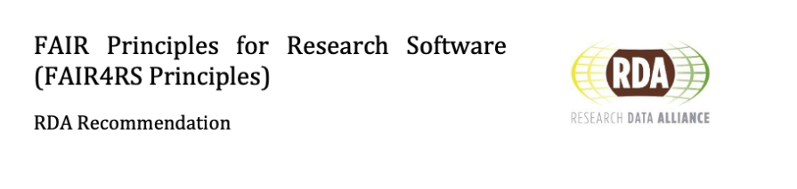
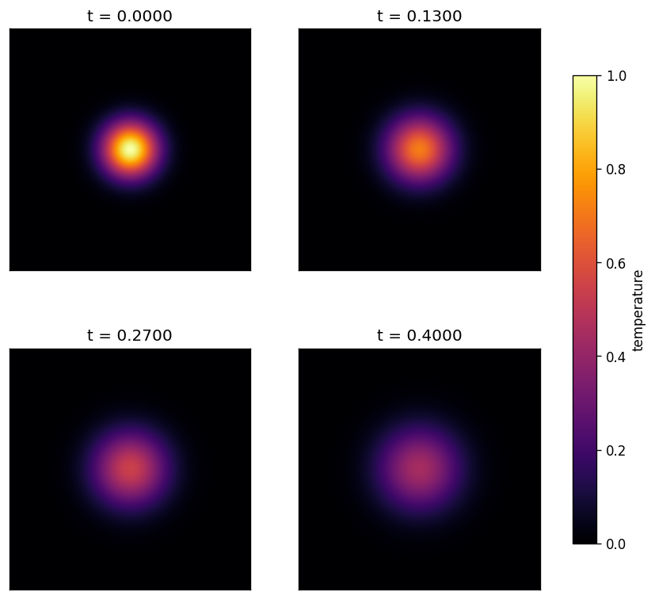
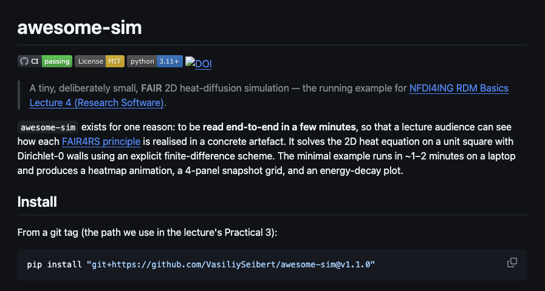

NFDI4ING
RDM Basics for Engineers · Lecture 4 / 4
FAIR4RS
Research Software
that others can find, trust and run.
From a GitHub tag to a Zenodo DOI to a citable, reusable artefact — in 90 minutes.
Four lectures, one story
This fourth lecture pivots from research data to research software. Software runs, depends, versions, breaks — it needs its own playbook.
Lecture 1 · Motivation
FAIR principles, the data lifecycle, why we care about DOIs and ORCIDs.
Lecture 2 · Planning in RDMO
Writing a Software/Data Management Plan in rdmo.nfdi4ing.de.
Lecture 3 · Metadata
Describing data with Metadata4Ing, RO-Crate, controlled vocabularies.
Today (Lecture 4): the same mindset, for the code that produced the data. The community answer is FAIR4RS — FAIR Principles for Research Software.
Agenda · 3 × theory ↔ 3 × practical
Theory blocks introduce a FAIR4RS letter; each is immediately followed by a hands-on practical on an NFDI4ING service.
| Time | Block | Format | NFDI4ING service | FAIR4RS |
|---|
| 0:00–0:03 | Opening & recap | Theory | — | — |
| 0:03–0:16 | Findable & Accessible | Theory | — | F1F2F3F4A1A2 |
| 0:16–0:30 | Practical 1 · Discover porous media | Hands-on | Betty Research Engine | FA |
| 0:30–0:43 | Interoperable | Theory | — | I1I2 |
| 0:43–0:57 | Practical 2 · Test interoperability | Hands-on | Jupyter Service | I |
| 0:57–1:10 | Reusable | Theory | (back-ref RDMO SMP) | R1R2R3 |
| 1:10–1:24 | Practical 3 · Capture reusability via RO-Crate | Hands-on | Jupyter Service | R |
| 1:24–1:30 | Wrap-up, FAIR4RS checklist | Theory | — | — |
Why make research software FAIR?

Software runs — and once it runs, people depend on it. Three concrete things you gain when your code is FAIR:
① Citations & credit
A DOI makes your software citable like a paper. Every downstream study that runs your code shows up in your ORCID profile, CrossRef, Google Scholar.
② Reproducibility on a timescale of years
Pinned deps + an archived snapshot means the paper figures you generated in 2026 can still be regenerated in 2034. Reviewers, funders, and future-you all benefit.
③ Collaboration without email
A stranger can pip install your code, run an example, and open a pull request — without asking you for a zip file. Contribution ≈ free.
But software isn't "just another dataset"
| Data · static | Software · dynamic |
|---|
| Bytes at rest |
Executes — needs an environment |
| Linear snapshots |
Depends on other moving software |
| Immutability is a feature |
Versions at many granularities |
| Described by metadata, done |
Rots — breaks without being touched |
Hence FAIR4RS — the RDA-endorsed re-interpretation of FAIR where every letter is rewritten for things that run.
Chue Hong et al., FAIR Principles for Research Software, RDA, 2022. doi.org/10.15497/RDA00068
One repo, running through every slide
awesome-sim tiny
A deliberately small 2D heat-diffusion simulator prepared for this lecture. Read it end-to-end in ten minutes; see every FAIR4RS artefact in one place.
Every theory slide that introduces a FAIR4RS concept shows where it lives in this one repo — from the CI badge to the Zenodo DOI to the CITATION.cff.


The repo as of v1.1.0 — four green badges (CI, licence, Python, DOI) visible on the README itself.
01
Findable & Accessible research software
Making software publishable and retrievable by both humans and machines.
FAIR
F1 · Globally unique and persistent identifierF1F1.1F1.2
FAIR4RS · F1
Software is assigned a globally unique and persistent identifier.
Every piece of software needs an ID that (a) no other object in the world shares, and (b) keeps resolving forever — so humans and machines can point at it without ambiguity.
- F1.1 — components at different granularities (project, release, function) each get distinct IDs.
- F1.2 — each version gets its own distinct ID.
In awesome-sim
- Concept DOI
10.5281/zenodo.19677548 for the project itself → F1F1.1
- Version DOIs
…19677552 (v1.1.0), …19677549 (v1.0.0) → F1.2
- Git tags
v0.1.0, v1.0.0, v1.1.0 feed the Zenodo deposits.
- Concept DOI always redirects to the latest release — the project identity is stable, the target moves with each version.
One project · many versions · all citable forever.
F1 · A DOI is a promise, not a URLF1
Anatomy
doi.org /10.5281 /zenodo.19677548
- 10.5281 — registrant prefix (Zenodo / DataCite)
- zenodo.19677548 — suffix, opaque to DOI resolver
doi.org/… — HTTP resolver, not the identity
A DOI is guaranteed to resolve somewhere forever — even if GitHub, the authors, or the funding all disappear.
How you get one · live demo
- On zenodo.org/account/settings/github/, flip the switch next to your repository — that enables the GitHub ↔ Zenodo webhook.
- Push a git tag (e.g.
v1.1.0) and create a GitHub release.
- Zenodo receives the webhook, mints a DOI, archives a zip of the commit.
git → GitHub → Zenodo• • •
git tag -a v1.1.0 -m "Release 1.1.0"
git push origin v1.1.0
# → GitHub release created
# → Zenodo deposits a snapshot
# → DOI 10.5281/zenodo.19677552 issued
One project, many versions — each citableF1.1F1.2
Two levels of DOI
- Concept DOI — the project across all versions; always resolves to the latest release.
- Version DOI — a specific snapshot; never changes.
Cite this version, not the project when reporting a computation — so the exact inputs are reproducible in 10 years.
Git tags (v0.1.0, v1.0.0, v1.1.0) are the local truth; Zenodo mirrors them as immutable deposits.
awesome-sim on Zenodo, today
Open any of the three in a new tab — all resolvable, all describing the same repo at different granularities.
F2 · F3 · F4 · rich, linked, harvestable metadataF2F3F4
FAIR4RS · F2 · F3 · F4
F2. Software is described with rich metadata.
F3. Metadata clearly and explicitly include the identifier of the software they describe.
F4. Metadata are FAIR, searchable and indexable.
The metadata itself must be findable (not buried in a PDF), it must link back to the software's DOI, and it must be consumable by the registries and search engines that harvest it.
In awesome-sim
CITATION.cff at the repo root — GitHub reads it for the Cite this repository sidebar.codemeta.json in JSON-LD — harvested by Zenodo, OpenAIRE, Google Scholar.- Both files carry the Zenodo DOI → F3 link in both directions.
- README badges surface F1 + F2 to humans at a glance.
- Zenodo mints a DataCite record automatically — F4 is "done" by using Zenodo at all.
Next slide: both files line-by-line.
Machines can only find what they can readF2F3F4
CITATION.cffYAML · CFF 1.2.0
cff-version: 1.2.0
message: "If you use this software, please cite it."
title: awesome-sim
version: 1.1.0
doi: 10.5281/zenodo.19677552
license: MIT
authors:
- family-names: Seibert
given-names: Vasiliy
orcid: https://orcid.org/0000-0002-7121-6816
affiliation: TU Clausthal
repository-code: https://github.com/VasiliySeibert/awesome-sim
keywords: [heat-equation, FAIR4RS, teaching]
F4 — GitHub reads this file and renders the sidebar's "Cite this repository" button.
codemeta.jsonJSON-LD · CodeMeta 2.0
{
"@context": "https://doi.org/10.5063/schema/codemeta-2.0",
"@type": "SoftwareSourceCode",
"name": "awesome-sim",
"identifier": "10.5281/zenodo.19677548",
"license": "https://spdx.org/licenses/MIT",
"author": [{
"@type": "Person",
"givenName": "Vasiliy",
"familyName": "Seibert",
"@id": "https://orcid.org/0000-0002-7121-6816"
}],
"softwareRequirements": [
"numpy>=1.26,<2.0", "matplotlib>=3.8"
]
}
F2 + F3 — JSON-LD means harvesters, OpenAIRE, Zenodo and search engines consume the same file.
A1 · A1.1 · retrievable via a standardized protocolA1A1.1
FAIR4RS · A1 · A1.1
A1. Software is retrievable by its identifier using a standardized communications protocol.
A1.1. The protocol is open, free, and universally implementable.
Given the DOI or the git URL, any human or machine must be able to fetch the code over a protocol that is publicly documented, costs nothing to implement, and has at least one open-source client.
In awesome-sim
git clone https://… over HTTPS — IETF standard.pip install git+<url>@v1.1.0 — open protocol + open tool.- Zenodo zip over HTTPS — same stack, no login.
- Every access path above is documented, free, has multiple implementations.
- No FTP-with-PDF-application, no "email the author", no proprietary portal.
Open, free, universally implementableA1A1.1
FAIR4RS A1.1 asks: "Is the protocol open, free, and universally implementable?" For research software, the answer is almost always HTTPS + git.
retrieve awesome-sim, three ways• • •
# (a) clone — full history
git clone https://github.com/VasiliySeibert/awesome-sim
# (b) install a pinned tag — our Practical 3 path
pip install "git+https://github.com/VasiliySeibert/awesome-sim@v1.1.0"
# (c) download the Zenodo archive — no GitHub needed
curl -LO https://zenodo.org/records/19677552/files/awesome-sim-1.1.0.zip
The protocol matters
- HTTPS — an IETF standard, any device, no account.
- git — an open protocol with multiple interop implementations.
- PyPI / conda — open registries using the same stack.
Private FTP? Proprietary portal requiring a PDF application? Not A1.1.
← Lecture 1 · DOI + ORCID
A1.2 · auth is a feature, not a gateA1.2
FAIR4RS · A1.2
The protocol allows for an authentication and authorization procedure, where necessary.
Authentication is a capability of the protocol, to be used only when the content genuinely requires it (private review, rate-limits, contribution provenance). A public repo that optionally supports OAuth is still fully A-compliant.
In awesome-sim
- Repo is public — anyone reads or
pip installs it without a login.
- GitHub personal access tokens are available if you fork a private draft.
- Optional OAuth via GitHub unlocks higher rate limits for automation.
- In Practical 1 you'll log into the Betty Research Engine via GitHub OAuth — that's A1.2 in action at a search service, not the repo.
Authentication, where genuinely necessaryA1.2
What A1.2 is not
- It is not an excuse to hide public research behind a login.
- It is not about protecting code from reviewers.
What A1.2 is
- A Personal Access Token for a private fork during peer review.
- OAuth (GitHub login to Zenodo, to the Betty Engine, …) — authenticated access, not locked content.
- Rate-limit mitigation & contribution provenance (who pushed what).
cloning with a PAT (private review)• • •
export GITHUB_TOKEN=ghp_XXXX...
git clone https://${GITHUB_TOKEN}@github.com/you/secret-repo
# for automated CI, prefer GitHub's short-lived OIDC tokens
Practical 1 uses OAuth to log into the Betty Research Engine via GitHub — you will see A1.2 in action.
A2 · metadata outlives the softwareA2
FAIR4RS · A2
Metadata are accessible, even when the software is no longer available.
Software rots. Hosts go bankrupt. Dependencies disappear. But the record that the software existed — who wrote it, what it did, what it depended on — must stay resolvable, so citations and reproducibility claims don't silently break.
In awesome-sim
- Zenodo preserves the metadata plus a zipped snapshot, even if the GitHub repo disappears.
- Software Heritage crawls GitHub and assigns each file a
SWHID — content-addressed forever.
CITATION.cff and codemeta.json are in both archives.- The DOI keeps resolving to the Zenodo record even for a deleted repo.
Metadata outlives the softwareA2
A2: if the software disappears, the metadata must remain resolvable forever. Two instruments do the heavy lifting.
Zenodo
Immutable deposit of the code snapshot + its metadata record. Backed by CERN; long-term preservation policy.
Software Heritage
Inria-led universal source-code archive. Already crawls all of GitHub, GitLab, PyPI, Debian, … Gives every file a SWHID — content-addressed forever.
awesome-sim on Software HeritageSWHID
swh:1:dir:… ← the directory tree
swh:1:rev:… ← the commit
swh:1:snp:… ← the full repo snapshot
resolves even if GitHub is gone.
A citation that includes a DOI + SWHID is the gold standard: one for people, one for content-addressed preservation.
F + A · the minimum viable artefacts
F · Findable
DOI (concept + version), rich machine-readable metadata, indexed by a registry.
A · Accessible
HTTPS + git or a registry, auth only where strictly necessary, archive for persistence.
Your repo today has
CITATION.cff, codemeta.json, tagged releases, one DOI per release.
Bring to Practical 1
- FAIR metadata is what makes search engines surface your code at rank 1, not rank 100.
- Next: step into the shoes of a consumer. What does the Betty Research Engine actually find?
02
Practical 1 · Discover research software
Experience findability from the consumer side — search, sort, export, inspect.
FA
IR
NFDI4ING · Betty Research Engine
Find DuMux in 14 minutes
- Open the Betty Research Engine in a new tab. (software.nfdi4ing.de)
- Log in via GitHub OAuth — notice
A1.2 in action.
- Run the query
porous media.
- Sort the result list by citations (descending).
- Export the full result set as a
.json file.
- Within the search results, find the repository dumux/dumux. Open its entry and inspect the metadata fields — which fields does DuMux fill in that let it rank highly?
- Click on the DuMux result. Who cites the dumux/dumux repository? What do those citations tell you about its impact?
What made DuMux findable?
Prompt: Which fields were required for DuMux to surface at rank 1? Which of those fields does your own code currently expose?
Title & authors
From CITATION.cff — ORCIDs make authorship machine-resolvable.
License & version
SPDX id + semver tag — without these, aggregators de-rank the record.
Citation count
Populated by CrossRef/DataCite once the DOI is minted and cited back.
Takeaway
- If even one of these fields is missing in your repo, a researcher using a federated engine like Betty will not find you.
- The minimum effort is the 60 lines of YAML/JSON we saw on slide 1.3.
03
Interoperable research software
Software that talks to other software — open formats, qualified references, shared vocabularies.
FAIR
I1 · read, write, exchange via community standardsI1
FAIR4RS · I1
Software reads, writes and exchanges data in a way that meets domain-relevant community standards.
If two independent pieces of software want to talk, they need shared formats (HDF5, NetCDF, CSV+schema) and shared vocabularies. Where APIs are involved, they should be documented with open specs (OpenAPI, AsyncAPI).
In awesome-sim
- Input config:
pyproject.toml — standardized by PEP 518 & PEP 621.
- In-memory data:
numpy.ndarray — the de-facto Python scientific standard.
- Output figures: matplotlib PNGs & GIFs — universally readable.
- Could additionally expose a REST API described by OpenAPI — the next slide sketches what that would look like.
I1 is really a question about who reads what you write.
Open formats > bespoke filesI1
| Scenario | Bespoke | Interop-friendly | Why it matters |
|---|
| Simulation output |
results.bin (custom) |
results.h5 (HDF5) or .nc (NetCDF) |
Every language has a reader; chunked & self-describing. |
| Tabular data |
Excel with merged cells |
CSV + a data dictionary |
Parseable by any tool; diff-friendly under version control. |
| Service over HTTP |
Undocumented JSON endpoint |
OpenAPI spec + JSON-Schema'd responses |
Auto-generate clients, stubs, tests; discoverable. |
| Configuration |
my_input.txt (position-sensitive) |
TOML / YAML with a JSON Schema |
Validated, editable, idempotent. |
I1 heuristic: "If my format has a specification I can link to, and multiple implementations read it, it's interop-grade."
Example · OpenAPI beats a READMEI1
openapi.yaml · excerpt3.1.0
openapi: 3.1.0
info: { title: awesome-sim API, version: 1.1.0 }
paths:
/simulate:
post:
summary: Run a heat-diffusion simulation
requestBody:
required: true
content:
application/json:
schema: { $ref: '#/components/schemas/SimInput' }
responses:
'200':
content:
application/json:
schema: { $ref: '#/components/schemas/SimResult' }
components:
schemas:
SimInput:
type: object
required: [nx, ny, alpha, dt, n_steps]
properties:
nx: { type: integer, minimum: 8 }
alpha: { type: number, exclusiveMinimum: 0 }
What you get for free
- Auto-generated Python, R, Julia, TypeScript clients.
- Swagger UI & Redoc documentation out of the box.
- Fuzz testing from the schema (
schemathesis).
- Clients validate requests before they hit your service.
An OpenAPI spec is itself a machine-readable, qualified reference — it's I1 + I2 in a single file.
I2 · qualified references to other objectsI2
FAIR4RS · I2
Software includes qualified references to other objects.
Every external thing the software mentions — an author, a licence, a dataset, an instrument, a vocabulary term — should be referenced through a resolvable identifier from a maintained authority, not a free-text string.
I2 vs R2. I2 covers references to anything other than software. R2 (later) is the twin principle for references to other software.
In awesome-sim
- Authors: ORCID
0000-0002-7121-6816.
- Affiliation: ROR
ror.org/03hdw8p89 (TU Clausthal).
- Licence: SPDX URL
spdx.org/licenses/MIT.
- Self-identity: Zenodo DOI.
"Alice" vs "ORCID 0000-0001-…"I2
Unqualified
ambiguous❌
authors: [Alice, Bob]
license: "MIT"
depends_on: [numpy]
- Which Alice?
- MIT — the variant? MIT-0? MIT with advertising clause?
- Which version of NumPy, how constrained?
Qualified
unambiguous✓
authors:
- name: Alice Beech
orcid: https://orcid.org/0000-0001-2345-6789
license:
spdx: MIT
url: https://spdx.org/licenses/MIT.html
dependencies:
- name: numpy
pypi: https://pypi.org/project/numpy/
version: ">=1.26,<2.0"
Every claim now points to an external authority — ORCID, SPDX, PyPI. Machines can cross-check.
awesome-sim/codemeta.json — line by lineI2
codemeta.jsonJSON-LD
{
"@context": "https://doi.org/10.5063/schema/codemeta-2.0",
"@type": "SoftwareSourceCode",
"identifier": "10.5281/zenodo.19677548",
"codeRepository": "https://github.com/VasiliySeibert/awesome-sim",
"license": "https://spdx.org/licenses/MIT",
"programmingLanguage": "Python",
"runtimePlatform": "Python 3.11",
"author": [{
"@type": "Person",
"givenName": "Vasiliy", "familyName": "Seibert",
"@id": "https://orcid.org/0000-0002-7121-6816",
"affiliation": {
"@type": "Organization",
"name": "TU Clausthal",
"@id": "https://ror.org/03hdw8p89"
}
}],
"softwareRequirements": [
"https://pypi.org/project/numpy/",
"https://pypi.org/project/matplotlib/"
]
}
Every URL is a promise
- Zenodo DOI — object identity.
- SPDX — license semantics.
- ORCID — unambiguous author.
- ROR — unambiguous affiliation.
- PyPI — unambiguous dependency.
← Lecture 3 · CodeMeta & Metadata4Ing
Controlled vocabularies eliminate ambiguity · and give creditI2
The ambiguity problem
Two researchers tag their code with "heat diffusion":
- Physicist: the heat equation (PDE) — a mathematical model
- Materials engineer: thermal diffusion — a physical process in solids
Same two words. Different concepts. A colleague searching "heat diffusion" gets both, can't tell them apart.
The credit problem
Free-text keywords implicitly say: "I invented this concept." But you didn't. Wikidata, ISO, domain ontologies already defined it carefully.
A URI says: "Here is the official definition from the authority. This is exactly what I mean." That's honest scholarship.
← Lecture 3 · controlled vocabularies for data
Wikidata · Global terminology service
wikidata.org · Heat equationQ6510488
{
"label": "heat equation",
"id": "Q6510488",
"url": "https://www.wikidata.org/wiki/Q6510488",
"description": "parabolic partial differential equation",
"aliases": ["diffusion equation", "heat PDE"]
}
Each concept gets a unique, resolvable URI. A physicist links to Q6510488 (the PDE). A materials engineer links to a different concept for thermal transport. No collision. Precise.
wikidata.org
Dependencies are also qualified referencesI2
Unqualified dependency
❌ ambiguous• • •
dependencies = ["numpy"]
"I depend on numpy." But which version? Today's? Next year's? If numpy 3.0 breaks my code and someone installs it, whose fault is it?
Qualified dependency
✓ specific• • •
dependencies = ["numpy>=1.26,<2.0"]
"I depend on numpy, specifically in this API-stable range." That's a promise. A machine can check it. A future reuser knows the constraint.
This is I2 because
- It's a reference → Points to something external (numpy package on PyPI)
- It's qualified → With precise version constraints
- It's from a maintained authority → PyPI hosts numpy; the version numbers are real and resolvable
- It's machine-readable → Any packaging tool (pip, uv, poetry, hatch) understands
>=1.26,<2.0
PEP 621 is a public standard, so every tool reads it the same way. No ambiguity.
pyproject.toml · from source to installed packageI2
pyproject.toml · core sectionsTOML
[build-system]
requires = ["setuptools>=45"]
build-backend = "setuptools.build_meta"
[project]
name = "awesome-sim"
version = "1.1.0"
requires-python = ">=3.11"
dependencies = [
"numpy>=1.26,<2.0",
"matplotlib>=3.8",
]
Five steps to pip install
- Create pyproject.toml — Define build-system, name, version, dependencies, authors, license.
- Organize code — Use `src/awesome_sim/` layout; package name matches imports.
- Add `__init__.py` — Makes the directory a Python package; export main classes/functions.
- Install locally — `pip install -e .` tests installability before publishing; `-e` = editable mode.
- Publish to PyPI (optional) — `python -m build` then `twine upload dist/*`; now anyone runs `pip install awesome-sim`.
Alternative: Direct from GitHub
No PyPI account needed. Pin to a git tag:
pip install "git+https://github.com/VasiliySeibert/awesome-sim@v1.1.0"
Trade-offs: GitHub is immediate & automatic (push tag → installable); PyPI is discoverable & cached globally. Both are I2: qualified references to a maintained repository.
04
Practical 2 · Test interoperability
Can you actually run a stranger's software — and does it break when dependencies change?
FA
I
R
NFDI4ING · Jupyter Service
Install, run, break, understand
- Log in to jupyter.nfdi4ing.de and launch a fresh Python notebook.
- Install the pinned release:
pip install "git+https://github.com/VasiliySeibert/awesome-sim@v1.1.0" — notice this pins a specific git tag with qualified, constrained versions.
- In a new cell, run the 6-line quick-start from the README; inspect the heatmap output.
- Break interoperability: in a new cell, run
import numpy; print(numpy.__version__). Note the version. Then in your environment, try to understand: what would happen if this version constraint (numpy>=1.26,<2.0) didn't exist?
Alternative Step 4: Instead of breaking awesome-sim, create your own minimal package: write a function that returns "hello world", add a pyproject.toml with pinned dependencies (e.g., requests>=2.28,<2.31), push to a git tag, then install it in the Jupyter notebook with pip install "git+<your-repo>@v0.1.0".
notebook cell · the minimal runPython 3.11
from awesome_sim import HeatDiffusion2D
from awesome_sim.viz import plot_snapshot
sim = HeatDiffusion2D(nx=200, ny=200, alpha=1e-2, dt=5e-5)
sim.run(500)
plot_snapshot(sim.u, "out.png", title=f"t = {sim.t:.4f}")
Why I2 (qualified dependencies) matters
Prompt: You ran code written by someone else, in an environment you don't control. What made that possible? What would have broken it?
Pinned versions
The repo specifies numpy>=1.26,<2.0. That's I2: a qualified, maintained reference to another software package.
Standard package format
pyproject.toml is PEP 621. Every tool reads it the same way. No ambiguity.
Open protocol
pip install via GitHub works everywhere. No proprietary lock-in.
Takeaway
- Interoperability is not magic. It's: standards + constraints + open protocols.
05
Reusable research software
Understandable, modifiable, sustainable. The biggest block in spirit — we triage to the highest-leverage artefacts.
FAIR
R1 · R1.1 · R1.2 · describe, license, traceR1R1.1R1.2
FAIR4RS · R1 · R1.1 · R1.2
R1. Software is described with a plurality of accurate and relevant attributes.
R1.1. Software is given a clear and accessible license.
R1.2. Software is associated with detailed provenance.
A reuser needs enough labels to evaluate the software before cloning it — what it does, how it's licensed (R1.1 · machine-readable SPDX), and the story of who built it and why (R1.2 · who, when, what changed).
In awesome-sim
README.md (start here), docs/ (how it works), examples/ (how to run) — R1LICENSE file + SPDX id MIT → machine-readable → R1.1CHANGELOG.md (Keep-a-Changelog) + semver tags → R1.2- Conventional-commit git log gives a free curated trail.
- README has an explicit FAIR4RS self-audit table.
Documentation is layeredR1
README.md
Start here. Install, quick-start, what this project is not. < 2 screens.
docs/
How it works. Mathematical model, architecture, data formats. Static site: MkDocs, Sphinx, Quarto.
examples/
How to use it. Runnable notebooks or scripts reproducing headline figures.
CHANGELOG.md
How it changed. Keep-a-Changelog + semver give reusers an upgrade path.
CONTRIBUTING.md
How to help. Even "accept issues only" is a useful signal.
FAIR4RS.md (optional)
An explicit self-audit — the awesome-sim README has this as a table.
No license ≠ public domainR1.1
The SPDX License List
MIT, Apache-2.0, BSD-3-Clause — permissive.GPL-3.0-or-later, AGPL-3.0-only — copyleft.CC-BY-4.0 — for docs, not for code.
SPDX identifiers are strings — that is what lets a tool reason about compatibility automatically.
spdx.org/licenses
| You want… | Good default |
|---|
| Max adoption | MIT or Apache-2.0 |
| Improvements returned | GPL-3.0-or-later |
| Server-side reciprocity | AGPL-3.0-only |
| Scientific paper figures | CC-BY-4.0 (data/prose, not code) |
No LICENSE file = all rights reserved. Others legally cannot reuse it, even if the repo is public.
Who · what · when · why — for freeR1.2
git log · awesome-simprovenance
39b1aa9 docs: record Zenodo DOIs for v1.0.0 and v1.1.0
7b3f621 chore(release): v1.1.0
f4b9b5d docs: describe the mathematical model + hero image
8122c2e chore: initial scaffold
Conventional-commit style turns the log itself into a changelog draft.
CHANGELOG.mdKeep-a-Changelog
## [1.1.0] — 2026-04-21
### Added
- Hero image + mathematical model in README.
- Energy-decay regression test.
### Changed
- Raised upper bound on numpy to < 2.0.
## [1.0.0] — 2026-04-10
### Added
- First public release. Zenodo DOI minted.
git log — the raw trail.CHANGELOG.md — the curated story.AUTHORS / .zenodo.json — attribution persistence.
R2 · qualified references to other softwareR2
FAIR4RS · R2
Software includes qualified references to other software.
Every dependency your code needs to compile or run must be referenced through an authoritative source — name + version range + registry — not a loose "depends on NumPy". The reference itself should resolve to the qualifying authority.
R2 vs I2. I2 is about refs to anything other than software; R2 is specifically the software case.
In awesome-sim
pyproject.toml lists each dep with a PEP 440 version range.numpy>=1.26,<2.0, matplotlib>=3.8, pillow>=10.0.requires-python = ">=3.11" pins the interpreter contract.- Authority = PyPI; every name resolves to
pypi.org/project/<name>.
- Practical 3 exercise: delete the upper numpy bound and watch reusability crack silently.
Pin the whole world, not just the codeR2
Weakest · declare
pyproject.toml, requirements.txt with version ranges. Good enough for a tolerant reuser.
Stronger · pin
poetry.lock, uv.lock, conda env export — every transitive dep at a concrete version.
Strongest · contain
Dockerfile / apptainer.def + image pushed to GHCR. The OS, libc, CUDA, everything.
Dockerfile · reuse-gradeOCI
FROM python:3.11-slim@sha256:abc123... # content-addressed base
RUN pip install --no-cache-dir \
"git+https://github.com/VasiliySeibert/awesome-sim@v1.1.0"
ENTRYPOINT ["python", "-m", "awesome_sim.examples.minimal"]
R3 · meet domain-relevant community standardsR3
FAIR4RS · R3
Software meets domain-relevant community standards.
Use the packaging, testing, documentation, and distribution conventions of your language / community. Skipping them — even with otherwise beautiful code — makes reuse needlessly hard and signals "experimental" to reviewers.
In awesome-sim
- Packaging: PEP 621
pyproject.toml (Python community standard).
- Citation metadata: CFF 1.2.0, CodeMeta 2.0 (cross-community standards).
- Tests:
pytest — de-facto Python testing standard.
- CI: GitHub Actions matrix on Python 3.11 + 3.12.
- Licence: SPDX-identified — the metadata standard for licences.
Let CI answer "does it still run?"R3
Distribute where your community looks
- PyPI / conda-forge — Python.
- CRAN — R.
- CPAN, Julia General, Rust crates.io, …
- Otherwise: a tagged GitHub release + a DOI remains installable for years.
.github/workflows/ci.ymlsmoke test
name: CI
on: [push, pull_request]
jobs:
test:
runs-on: ubuntu-latest
strategy:
matrix: { python-version: ['3.11', '3.12'] }
steps:
- uses: actions/checkout@v4
- uses: actions/setup-python@v5
with: { python-version: ${{ matrix.python-version }} }
- run: pip install -e ".[dev]"
- run: pytest -q
- run: python examples/minimal_example.py
A green badge on the README > two paragraphs of installation docs.
Write the sustainability plan before the code rots
Reusability two years in is not an artefact — it's a policy. Who keeps the tests green? Which Python version stays supported? What triggers a new Zenodo deposit?
The community answer is the Software Management Plan (SMP) — the software cousin of the DMP we wrote in Lecture 2.
← Lecture 2 · RDMO SMP catalogue
RDMO SMP — what it captures
Roles · maintainer, reviewer, release manager.
Versioning · semver + cadence.
Archival · Zenodo + Software Heritage.
Support · issue SLA, EoL policy.
Deprecation · how & when code is retired.
rdmo.nfdi4ing.de
R · the smallest thing that could break you
Bring to Practical 3
- You will install
awesome-sim on a fresh Jupyter server and run it.
- Then you'll deliberately break reusability (remove the upper numpy bound, delete the LICENSE) and observe what complains.
- That exercise shows you what the smallest missing artefact in your own repo is.
RO-Crate · research object in one containerR
What is an RO-Crate?
A standardized, portable directory structure that bundles:
- Code — your source files
- Data — inputs, examples, outputs
- Metadata — authors (ORCID), license (SPDX), description
- Environment — dependencies, Python version, system reqs
- Provenance — git history, changelog, execution trace
All wrapped in a machine-readable manifest: ro-crate-metadata.json (JSON-LD).
Why you need it
Reproducibility
Everything needed to regenerate a figure in 2034 is in one crate. Not scattered across GitHub, Zenodo, supplementary materials, and lost emails.
Portability
Execute the same crate in Jupyter, Docker, your laptop, or an HPC cluster — the metadata tells each system what it needs.
Preservation
Deposit the entire crate on Zenodo or Software Heritage once. Future tools understand RO-Crate structure — your work isn't locked into one archive format.
06
Practical 3 · Capture reusability via RO-Crate
Package your entire research object — code, data, metadata, environment, provenance — for reproducibility across time and tools.
FAI
R
NFDI4ING · Jupyter Service
Package awesome-sim as a Research Object
- Log in to jupyter.nfdi4ing.de and open a terminal in your notebook.
- Clone awesome-sim. In a Python notebook cell, run
pip install rocrate.
- Use the
rocrate library to create a minimal RO-Crate of awesome-sim: add code directory, README.md, LICENSE, pyproject.toml, and an example output file.
- Add metadata: author ORCID, license (SPDX), description. See the code example on this slide for the pattern.
- Call
crate.write("awesome-sim-crate/") to generate the RO-Crate directory. Inspect the generated ro-crate-metadata.json — this is what rocrate created for you.
Reference: rocrate on PyPI — install with `pip install rocrate` and use the API to add files, authors, and metadata to your crate.
The R in FAIR4RS · Reusability across time
Prompt: An RO-Crate captures your code, data, metadata, and environment together. Why does this matter for the future? What could break if you didn't package it this way?
Reproducibility
RO-Crate pins the entire execution context: code version, deps, data, env. Run it identically in 2034.
Provenance
Metadata (author ORCID, license, citations) travels with the code. Credit is preserved.
Portability
Standard format, many tools understand it. Not locked into one platform or archive.
Takeaway
- R (Reusable) means: future-proofing your research. RO-Crate is the container.
The FAIR4RS checklist — one page
F
Findable
- Concept + version DOI on Zenodo
CITATION.cff at rootcodemeta.json JSON-LD- Indexed by at least one registry (Betty Engine, PyPI, …)
A
Accessible
- Installable:
pip install via GitHub or PyPI
pyproject.toml with PEP 621 metadata- HTTPS + git (open protocols, no login walls)
- Software Heritage + Zenodo snapshot
I
Interoperable
- Open formats (HDF5, CSV, OpenAPI)
- Qualified references: ORCID, SPDX, ROR, PyPI, Wikidata URIs
- Pinned dependencies with version constraints
- Standard package structure + standard metadata
R
Reusable
LICENSE (SPDX id) + README + examplesCHANGELOG.md + conventional commits + semver tags- CI green badge + RDMO Software Management Plan
- RO-Crate packaging for reproducibility across time
Tick every box on your repo — that is how you ship FAIR4RS-compliant software.
The services you touched today
Jupyter Service
Run & reuse any pip-installable package in a sharable notebook.
jupyter.nfdi4ing.de
RDMO
Write your (Software) Management Plan before the code rots.
rdmo.nfdi4ing.de
Coscine
Project data storage with PIDs and access control (Lectures 1–2).
coscine.de
ing.grid
OA journal for engineering RDM — a landing spot for this kind of work.
ing.grid
Across the series: data + software, together, is reproducible research.
NFDI4ING · Thank you
RDM Basics 4 · End of series
Q & A
Your repo, next week — FAIR4RS-shaped.
Start with the one thing you know is missing. Ship the rest incrementally.